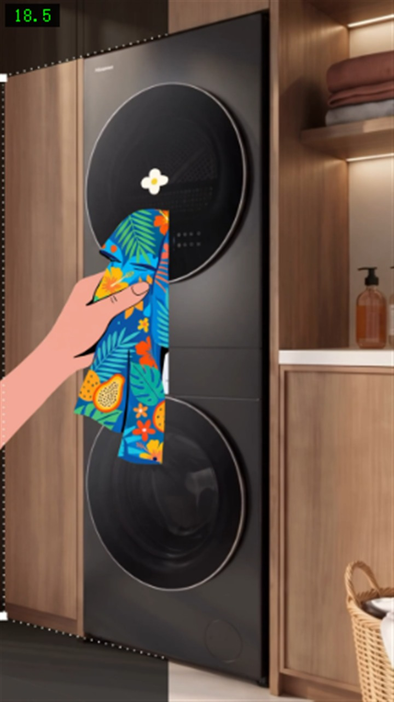
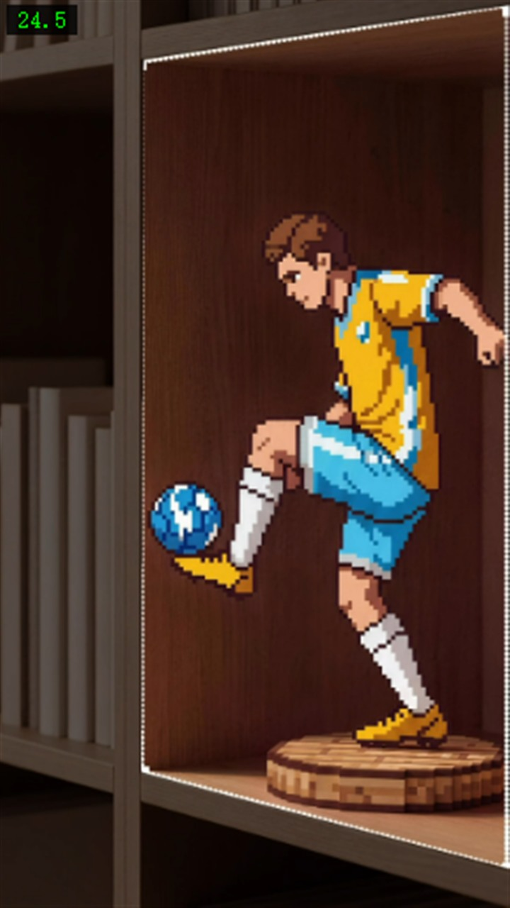
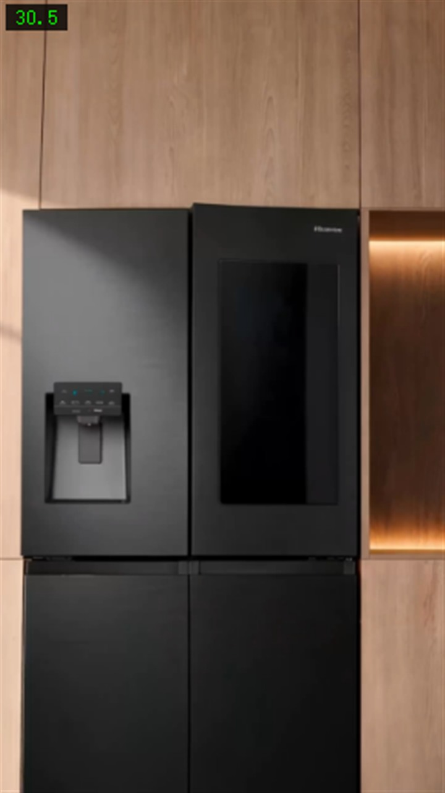
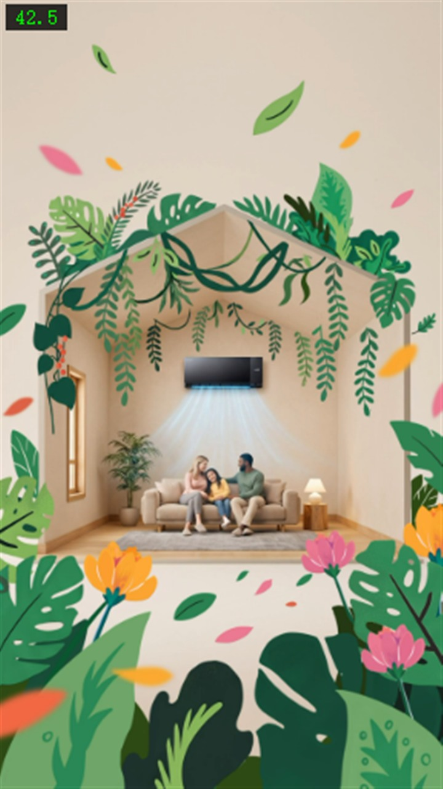
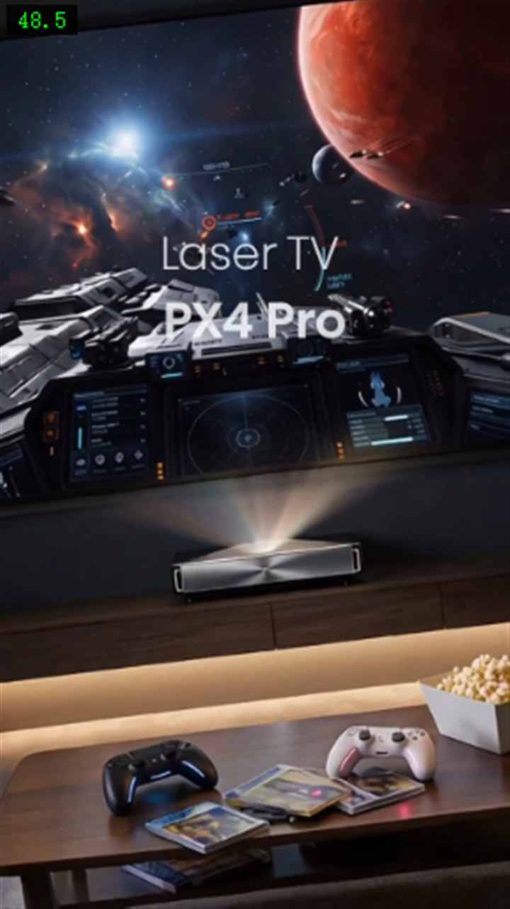
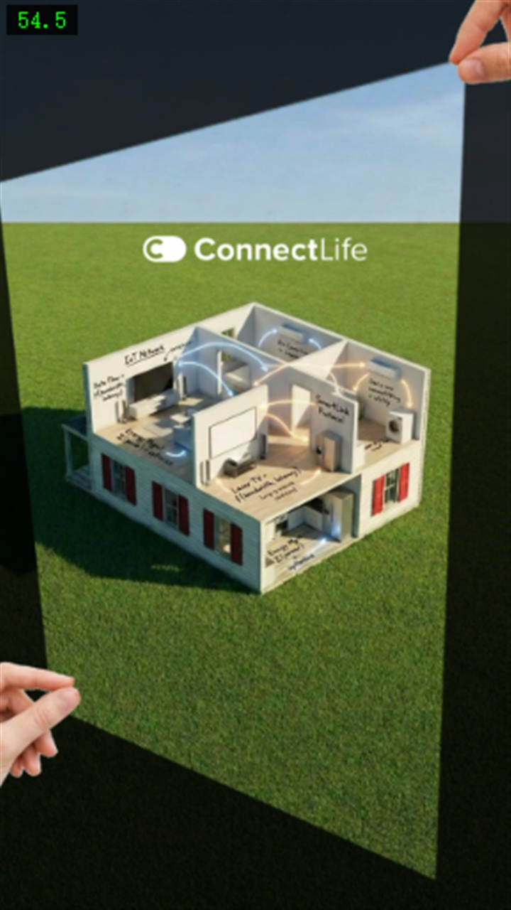
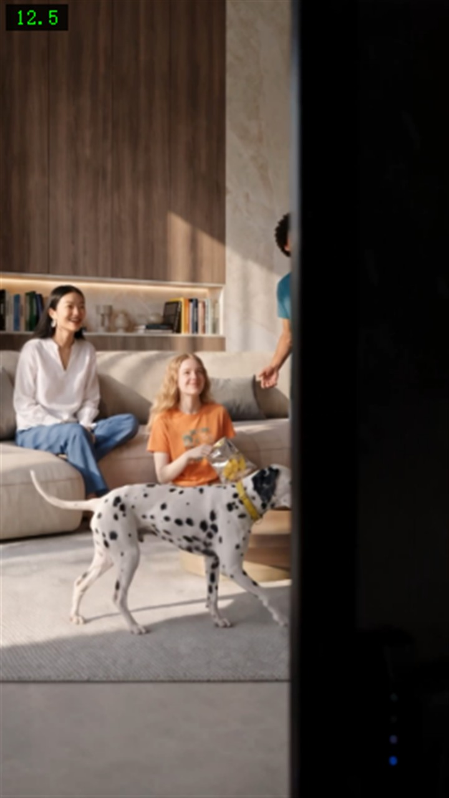

04 / FRAMES
画面 · 产品线顺序
按出场顺序排列。一支 57 秒的竖版短片覆盖六条产品线加一个生态概念——这是内容的密度，也是节奏的压力。







为海信 IFA Berlin 2024 展会项目制作的竖版短视频内容。一支 57 秒的片子走完整条产品线——从 IFA 展牌到电视、洗烘、冰箱、空调、投影，收在 ConnectLife 智能家居。

这不是自主命题。
下方是半成品素材（我制作中的版本），品牌方完成后期调色与包装后发布在官方账号上——对照可以看出我的制作范围，以及品牌方后续加工的部分。
| 品牌方 | Hisense 海信 |
|---|---|
| 项目 | IFA Berlin 2024 展会内容 |
| 形式 | 竖版短视频（9:16），1440 × 2560，57 秒，含音轨 |
| 我的角色 | 内容制作——负责成片内容的制作与交付 |
| 发布平台 | TikTok · @hisense 官方账号 |
| 发布状态 | 已公开发布（链接见下方"成片"） |
| 本页素材 | 半成品（我制作中的版本，非最终交付稿） |
这支片子的结构是一条产品线走完：IFA 展牌开门 → 电视（海景画面）→ 家庭场景 → 洗烘套装 → 运动（足球）→ 冰箱 → 空调 → 客厅 → 投影游戏 → ConnectLife 智能家居收尾。
57 秒里覆盖 6 条产品线 + 一个生态概念。竖版短片要在极短时间内完成这么多次信息切换，靠的不是单个镜头的精致，而是节奏与转场的设计。
在真实商业项目里，把自己负责的部分说清楚，比把功劳说大更重要——因为面试官会追问细节。
品牌方完成后期后发布在 Hisense 官方 TikTok 账号。点下方按钮查看最终上线的版本。
https://www.tiktok.com/@hisense/video/7680332933458054413
按出场顺序排列。一支 57 秒的竖版短片覆盖六条产品线加一个生态概念——这是内容的密度，也是节奏的压力。






真实项目最有力的证据不是成片本身，而是过程文件——它们证明你确实参与了制作，而不只是转发了一个链接。